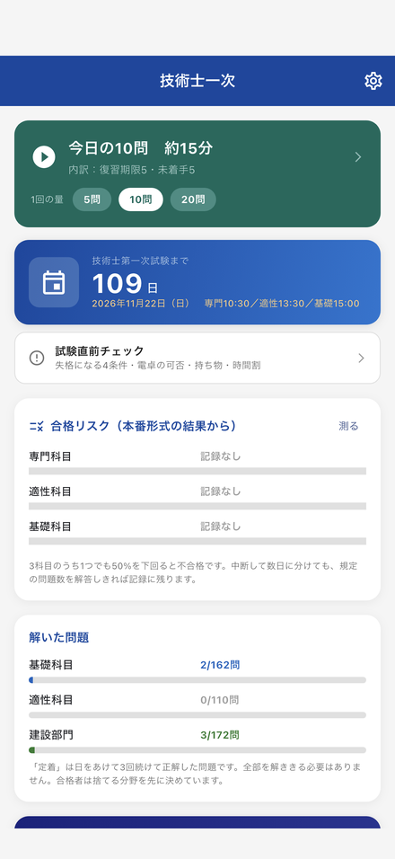
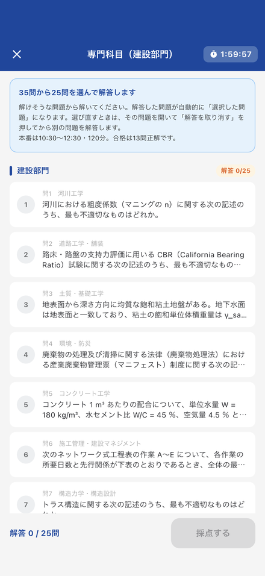
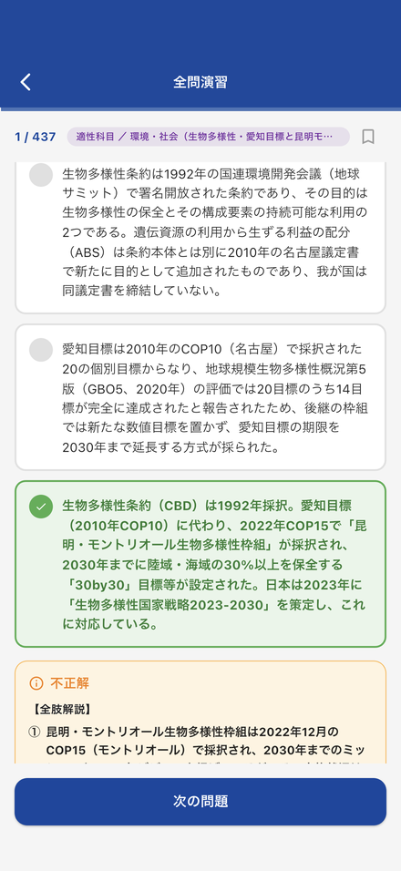

基礎科目と専門科目は、解答する問題を自分で選びます
基礎科目は5群それぞれ6問から3問、専門科目は35問から25問を自分で選んで解答します。適性科目は15問すべてに解答します。基礎・専門科目では、知識に加えて問題の選択と時間配分も必要になります。
| 科目 | 時間割 | 出題数 → 解答数 | 合格ライン |
|---|---|---|---|
| 専門科目（建設部門） | 10:30〜12:30 | 35問 → 25問を選択 | 13問正解（26点/50点） |
| 適性科目 | 13:30〜14:30 | 15問 → 全問解答 | 8問正解 |
| 基礎科目 | 15:00〜16:00 | 30問 → 各群3問ずつ15問 | 8問正解 |
解答方式は全科目とも五肢択一式（マークシート）。3科目のうち1つでも50%を下回ると不合格で、総合点での救済はありません。出典：公益社団法人日本技術士会「令和8年度 技術士第一次試験 受験申込み案内」
アプリでできること
毎日の演習（5問・10問・20問）
開いてすぐ始められます。復習時期を迎えた問題、まだ解いていない問題の順に出題します。学習時間に合わせて5問・10問・20問から選べるので、通勤や昼休みで区切れます。全部を解ききる必要はありません。
本番形式トレーニング
- 本試験の出題数・解答数・制限時間に合わせて出題します（専門120分／適性60分／基礎60分）
- 専門科目は、建設部門の複数分野から出題します
- 正誤と解説は解答中に表示せず、最後にまとめて採点します
- 学習用のため途中で中断・再開できます。所定の問題数を解答すると結果を記録します
- 選択しなかった問題を後から解いて、問題選択の判断を振り返れます
全425問・全選択肢に解説
正解の理由だけでなく、他の選択肢を誤りと判断する根拠も確認できます。計算問題では途中式を掲載し、根拠にした条文・技術基準も示しています。
基礎科目／適性科目／専門科目（建設部門）の3科目を1本でカバー。すべて開発者による独自作成で、過去問題の転載ではありません。
試験直前チェック
失格条件や持込み条件の見落としを避けるための確認ページです。失格になる4条件、持ち込める電卓の条件（使用できないキーの一覧つき）、当日の時間割と持ち物をまとめています。内容は日本技術士会の受験申込み案内の記載に基づいています。
実際の画面



よくある誤解
令和8年度の案内では、専門科目で26問以上マークしても失格にはなりません
令和8年度の受験申込み案内では「指定された問題数を超えて解答した場合は、最初の解答から指定された問題数までを採点の対象とし、以降の解答を採点の対象から除外します」と定められています。最新年度の取扱いは、必ず日本技術士会の受験申込み案内でご確認ください。
ただし、答案の受験番号の未記入・誤記入・マークもれ・マークミスは失格です（全科目の答案が採点対象外）。ほかに、1科目でも欠席した場合、いずれかの科目で途中退席した場合、答案を提出しなかった場合も失格になります。
合格ラインは60%ではなく50%です
合否決定基準は各科目50%以上（基礎8/15・適性8/15・専門13問＝26点）。専門科目は1問2点なので25点ちょうどが存在せず、26点＝13問正解が合格ラインになります。
電卓は持ち込めますが、条件があります
使用が認められているのは四則演算（＋－×÷）・平方根（√）・百分率（％）・数値メモリのみを有するものに限られます。関数電卓、電子手帳、電子メモ、電子辞書、ライティング機能付、翻訳機能付は使用できません。
次のキーがあるだけで使用できません：
sin cos tan log ／
RUN EXE PRO PROG COMP ENTER COPY REPLAY ／
P1〜P4 PF1〜PF4
手元の電卓を早めに確認してください。試験直前に気づくと当日の動揺につながります。
ダウンロード
累計20回まで無料で解答できます。21回目以降は¥1,500の買い切りで全問題を解放できます。追加課金・月額料金はありません。広告・トラッキングもありません。